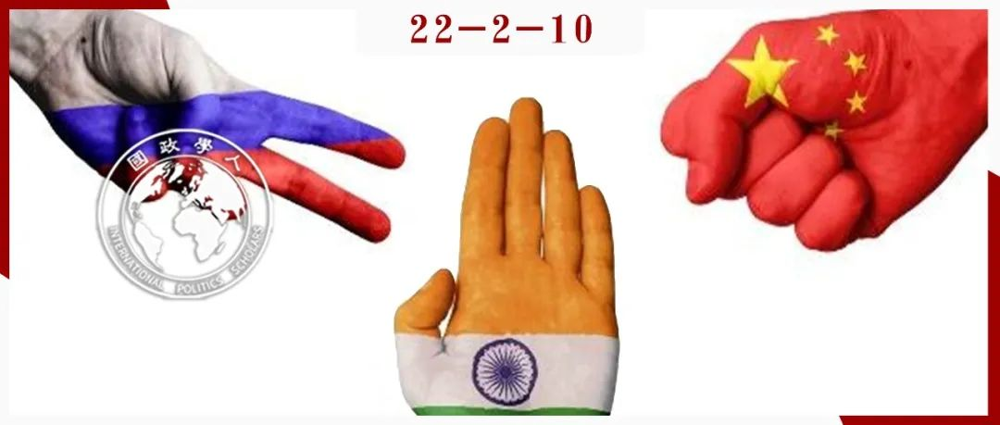
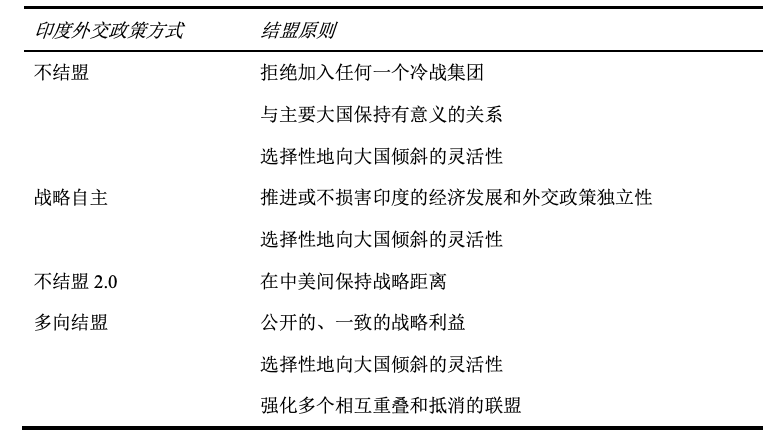
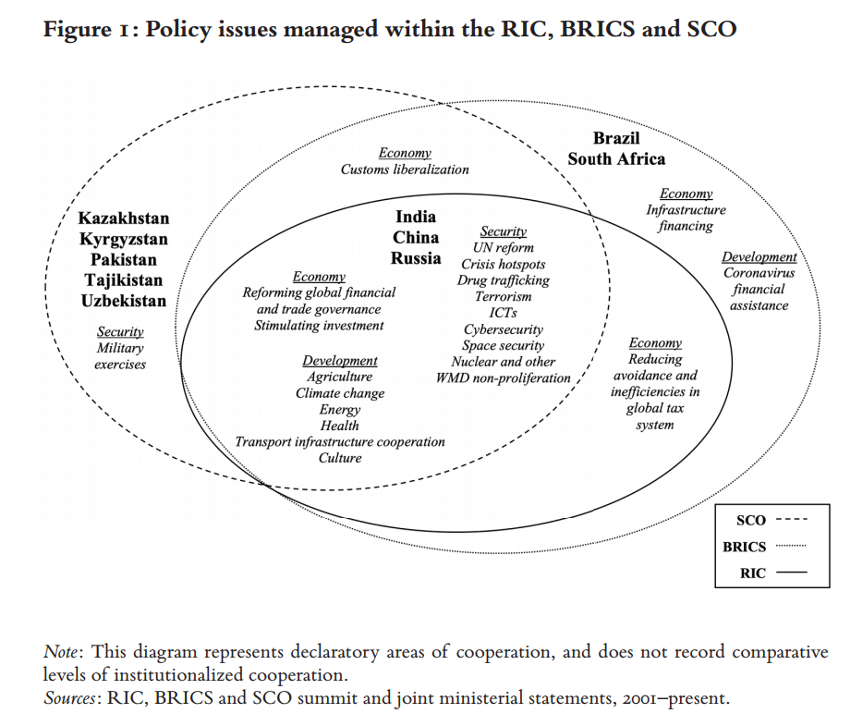
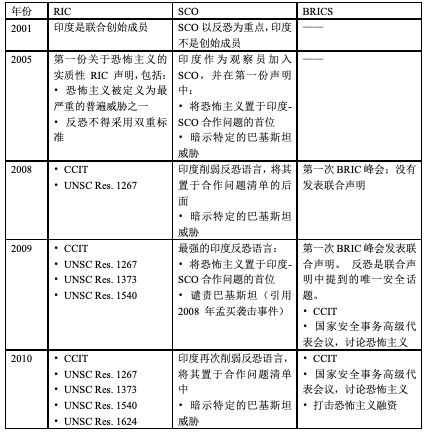
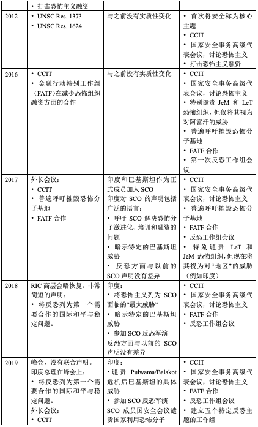
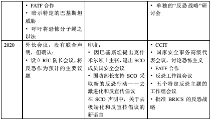

收录于合集

作品简介 ****
作者： Frank O’Donnell，美国海军战争学院国家安全事务系的博士后研究员，史汀生南亚项目的非常驻研究员，主要研究方向为核理论和态势发展、常规军事现代化以及南亚国家安全决策过程；Mihaela Papa，塔夫茨大学弗莱彻法律与外交学院可持续发展和全球治理兼职助理教授，主要研究方向为全球化与贸易、国际环境与能源、国际法与组织、谈判与冲突解决。
编译： 石稚瑄（国政学人编译员，国际关系学院国际政治系）
来源： Frank O’Donnell & Mihaela Papa, India’s multi-alignment management and the Russia–India–China (RIC) triangle, International Affairs , Vol. 97, No. 3, May 2021, pp. 801–822, https://doi.org/10.1093/ia/iiab036.

导读
近年来，印度调整了对外战略，由传统的不结盟转向多向结盟，比如俄印中三国机制（RIC）、金砖国家（BRICS）和上海合作组织（SCO）等等。本文探讨了印度在俄印中三国机制、金砖国家和上海合作组织内部和之间推进反恐议程的努力。研究发现，印度更愿意围绕其政策偏好加强结盟的趋同，同时避免创建正式政府间组织的联盟结构。这种做法与印度倾向于战略伙伴关系而非联盟，倾向于管理多个联盟而非致力于特定盟友的做法相吻合。2018年以来印度决定重新启动俄印中三国机制的重要原因是其在金砖国家和上合组织推进反恐议程并不成功。印度试图将其反恐政策定位为每个联盟的基本共识：重新定义恐怖主义的挑战，特别关注巴基斯坦继续收容反印度恐怖分子的罪责问题；寻求谴责、制裁和孤立巴基斯坦；鼓励支持印度起草的《关于国际恐怖主义的全面公约》。
本文的意义在于总结了印度多向结盟管理的逻辑，解释了2018年印度重启俄印中三国机制的原因。当前大国战略竞争不断加剧，印度在强调战略自主的同时，较多地采取对冲性政策：在大国外交层面，同时加强与美俄的战略安全关系；在多边外交层面，既依托新兴经济体身份，参与俄印中三国机制、金砖国家和上合组织，又以民主国家自居，参与QUAD、美日印三边合作。研究印度的多向联盟管理有利于中国理解印度外交的逻辑，清醒预判其政策走向。
摘要
在对俄罗斯和中国的欧亚外交中，印度更倾向于通过双边方式以及金砖国家（BRICS）和上海合作组织（SCO）的多向结盟进行接触。相比之下，印度将俄罗斯-印度- 中国（RIC）三角视为一种不太有效的机制。然而，尽管2020年中印发生了军事危机，但印度出人意料地同意参加俄印中三国外长会议并启动俄印中三国防长会议。印度也在2018年重启了俄印中三国峰会。本文分析了印度最近加强俄印中三国机制的驱动因素。根据印度的政策声明和联盟文件，本文认为印度在俄印中三国机制、金砖国家和上合组织间制造了政策议程重叠，这促进了挑选联盟。本文先介绍了三个联盟中印度反恐外交的案例，然后得出结论：对在一个集团内推进安全政策议程的进展感到不满，导致印度重新专注于在其他联盟中建立这一议程。本文有助于将多向结盟管理概念化，同时在政权复杂的时代为印度与俄罗斯和中国在多边制度和外交中的关系提供新的见解。文章其次认为，印度对其在一个集团内推进安全政策议程的进展不满意，导致它重新专注于以其他方式建立这一议程。本文有助于将多边结盟管理概念化，同时在制度复杂的时代为印度与俄罗斯和中国在多边制度和外交中的关系提供新的见解。
编译
本文的研究问题有两个。 首先，是什么推动印度努力制定俄印中三国机制（RIC）、金砖国家（BRICS）和上海合作组织（SCO）的安全议程，并将以上包含中国和俄罗斯的机制作为欧亚多向结盟的核心？其次，印度重新启动RIC对我们理解印度的多向结盟外交政策实践而非一般原则有何帮助？
本文提出了两个论点。第一， 印度更愿意围绕其政策偏好加强联盟的趋同，同时避免创建正式政府间组织（FIGO）特有的联盟结构。 挑选联盟（Forum- shopping）有助于印度进行“软制衡”（soft balancing），采用非正式的联盟、国际制度和经济措施来限制敌对势力。挑选联盟还有助于对冲，减少印度在任何一个机制推进议程失败的影响。第二， 印度在金砖国家和上合组织推进其反恐议程方面缺乏成功，这是自2018年以来印度决定重新启动俄印中三国机制的重要诱因，将俄印中三国机制作为解决反恐问题的另一个平台和机会。
本文考察了关于联盟与多向结盟的学术研究，先介绍了它们的关键观点和指标，然后通过分析自2001年以来三个联盟中印度安全政策制定和反恐案例研究进行检验，最后总结了文章的发现以及理论与政策意义。
01
印度外交政策中的结盟与欧亚大陆的多向结盟
印度学界和政界提出了四种外交政策方式及其相关的结盟原则。第一种是不结盟（non-alignment）。第二种是战略自主（strategic autonomy）。第三种是不结盟2.0（Non-alignment 2.0）。第四种是多向结盟（multi-alignment）。
表1：印度外交政策方式和结盟原则

总之，印度学界的相关研究倾向于将印度结盟描述为内容中立和基于流程的。然而，这些文献没有解决印度如何管理多个联盟的问题，包括它如何跨联盟行动以推进某个政策问题。
02
对多向结盟和俄印中三角的一般解释
1992年哈萨克斯坦时任总统纳扎尔巴耶夫首次阐述了“多向外交政策”一词，推动了多向结盟相关的一般性研究。1996年俄罗斯外交部长叶夫根尼·普里马科夫也采用类似的方法，希望俄罗斯与各种国际权力中心保持“平等的伙伴关系”，并与每个中心保持“等距定位”，以保持多极的力量平衡。1998年他提出俄印中联盟的初步倡议。俄罗斯的这种做法看起来接近印度的多向结盟外交政策，但印度的多向结盟实践允许选择性地向某些大国倾斜；俄罗斯主要根据双边国家间关系来解释多向主义，而印度则更强调建立和加入多边制度。此外，当双方都决定建立新的多边联盟时，俄罗斯倾向于基于条约的制度化模式，印度倾向于更宽松的安排，例如集体安全条约组织（CSTO）和上合组织。
在解释印度为何与俄印中三国机制、金砖国家和上合组织接触时，一些专家认为这些机制是对印度与俄罗斯和中国的双边关系的补充；也有专家认为，这可以视为印度试图制定非西方的国际安全实践规范；其他专家声称，印度参与这些欧亚联盟是对中国“持续接触”的一部分，确保双边关系继续恶化的情况下与中国保持对话，还可以削弱中俄战略伙伴关系；还有专家认为，印度参与俄印中三国机制是其致力于多向结盟对冲方式而非排他性结盟的典型案例。这些观点都被用来解释2018年俄印中三国机制的重新启动。这种复兴的时机也被证明是对美国特朗普政府单边主义的回应。
然而，这些研究并未深入解释印度为推进其在以上联盟中的利益而采取的行动之间的相互作用，还忽略了一个问题：印度对在其他联盟中推进政策议程进展的不满是否可能导致在俄印中三国机制中强调这些问题。
03
审视印度在欧亚大陆的安全多向结盟
为了弥补文献中的这些空白，本研究调查了印度在俄印中三国机制、金砖国家和上合组织三个联盟中的安全政策议程，将从2001年到2020年印度在这些联盟中推进反恐举措的努力作为案例进行考察。本文详细介绍了印度的反恐政策议程，追溯了该议程在每个联盟的联合声明和行动中成功反映的程度，并探讨了印度在其多向结盟方式管理发生重大变化时在每个联盟中反恐议程的进展比较。
针对第一个研究问题——印度努力制定俄印中三国机制、金砖国家和上合组织安全议程的驱动因素，本文假设 印度更愿意围绕其政策偏好加强联盟的趋同，同时避免创建FIGO联盟结构。 针对第二个研究问题——印度重新启动俄印中三国机制对我们理解印度的多向结盟外交政策实践而非一般原则有何帮助，本文假设 印度在金砖国家和上合组织推进其反恐议程方面缺乏成功是其决定重新启动俄印中三国机制的重要诱因。
04
评估印度在俄印中三角中的多向结盟管理
俄印中三国机制的总体驱动力是改善三国之间的政策协调，以加速多极化发展。金砖国家早期峰会的核心主题是全球经济治理改革。上合组织主要关注中亚安全和能源合作。随着时间的推移，这三个联盟都逐渐扩大了政策议程。图1列出了截至2020年11月，俄印中三国机制、金砖国家和上合组织成员国政策问题的差异和重叠。

印度外交部关于金砖国家的声明倾向于强调印度参与结盟所带来的经济和金融收益。然而2011年之后，反恐逐渐成为印度参与金砖国家的同等收益。印度外交部关于俄印中三国机制的声明也倾向于列出会议上讨论的问题。但反恐是印度议会议员向印度外交部提出的唯一具体的俄印中三国机制政策议题，要求俄印中三国机制对恐怖分子（特别是那些在巴基斯坦驻留并针对印度的恐怖分子）采取更强有力的声明和行动。印度认为参与上合组织会带来多重好处，包括印度更多地参与有关中亚和阿富汗安全的制度辩论；加强与能源丰富的中亚国家的外交和经济接触；增加一个与中国和俄罗斯就欧亚安全事务进行接触的多边论坛；减少中国在这些问题上的影响力。然而，以安全为中心的上合组织活动也为印度提供了一个额外的平台，以赢得对其外交反恐方式的支持。
05
印度在欧亚联盟中的反恐外交
印度逐渐尝试在这三个联盟中建立相同的反恐政策议程，而不是进行分工。 印度首先寻求将反恐作为政策议程上的一般主题。然后，它确保其起草的《关于国际恐怖主义的全面公约》（CCIT）得到联盟成员的认可。
第二个目标是让中国因阻止了针对巴基斯坦的更强硬的反恐行动和语言而感到尴尬和孤立。 印度在不同的联盟中提出并强调这一议程，既可以引入针对巴基斯坦的多边反恐政策，也可以提高中国拒绝这些政策的政治成本。然而，印度受到了这三个联盟结构规则的挑战，这些规则将双边问题（如印巴关系和争端）排除在议程之外。
表2列出了印度反恐方式和渐进式议程设置的一般模式，比较了2001年至2020年印度在三个联盟中的努力。本文将2001年至2020年印度反恐多向结盟管理分为三个时期。2001年至2010年，印度致力于在俄印中三国机制（RIC）和上合组织（SCO）内制定议程。2010年至2018年，俄印中三国机制的反恐语言和承诺稳步缩减，上合组织对反恐的重视程度保持不变，印度的重点是在金砖国家（BRICS）内推进反恐议程。2018年至2020年，印度重启俄印中三国机制，加强在上合组织内的反恐议程制定，但在上合组织内收获有限。
表2：2001-2020年印度在欧亚联盟中的反恐里程碑
  
06
结论
本文探讨了印度在俄印中三国机制、金砖国家和上合组织内部和之间推进反恐议程的努力。本文发现，印度更愿意围绕其政策偏好加强结盟的趋同，同时避免创建FIGO结盟结构。这种做法与印度更倾向于战略伙伴关系而不是联盟，以及管理多个结盟而不是致力于特定的盟友的做法相吻合。印度的目标是将其反恐政策定位为每一个联盟的基本共识：包括重新定义恐怖主义的挑战，特别是围绕巴基斯坦继续收容反印度恐怖分子的罪责问题；寻求谴责、制裁和孤立巴基斯坦；鼓励支持印度起草的CCIT。印度在金砖国家和上合组织中推进反恐议程并不成功，这是其自2018年以来决定重启俄印中三国机制的重要诱因。
本文还提出了有关印度模式如何反映当代国际关系的其他问题。这种模式在多大程度上是印度不断上升的大国地位的一个影响，印度是否会在获得全球大国能力时转向创建新的FIGO结构？该模式对非正式政府间组织（IIGO）和挑选联盟的偏好实际上只是当代国际关系中更普遍的现象吗？此外，印度在减少巴基斯坦支持的恐怖袭击方面的成功可以说是有限的。印度的挑选联盟方式是否应该继续下去？对这些主题的新研究将进一步加深我们对印度外交政策、制度复杂性和多向结盟管理的理解。
参考文献
[1] 李莉：《从不结盟到“多向结盟”——印度对外战略的对冲性研究》，载《世界经济与政治》，2020年第12期。
词汇整理
俄印中三国机制 the Russia–India–China (RIC)
金砖国家 the Brazil–Russia– India–China–South Africa (BRICS)
上海合作组织 the Shanghai Cooperation Organisation (SCO)
（法律术语）挑选法院；（此处译作）挑选联盟 Forum-shopping
不结盟 non-alignment
战略自主 strategic autonomy
多向结盟 multi-alignment
联合国安理会决议 UN Security Council Resolution (UNSC Res.)
审校 | 丁伟航 朱忻博
排版 | 屈媛媛 彭雯昕
文章观点不代表本平台观点，本平台评译分享的文章均出于专业学习之用, 不以任何盈利为目的，内容主要呈现对原文的介绍，原文内容请通过各高校购买的数据库自行下载。

国政学人
支持学术公益与知识传播
微信扫一扫赞赏作者 __赞赏
已喜欢，对作者说句悄悄话
取消 __
发送给作者
发送
最多40字，当前共字
上一页 1/3 下一页
长按二维码向我转账
支持学术公益与知识传播
受苹果公司新规定影响，微信 iOS 版的赞赏功能被关闭，可通过二维码转账支持公众号。